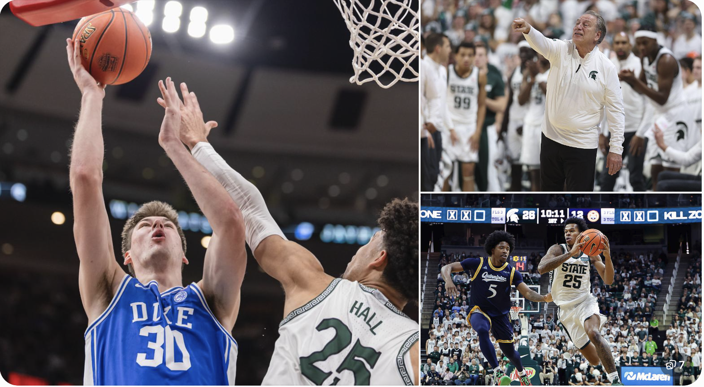

College basketball's early-season schedule delivered a major ranked matchup when the No. 2 Duke Blue Devils met the No. 5 Michigan State Spartans in the 2026 State Farm Champions Classic.
The matchup brought together two nationally recognized programs, experienced coaching leadership and players looking to make an impression early in the 2026–27 season. Duke arrived with an explosive offense and strong defensive numbers, while Michigan State brought its trademark physical style under head coach Tom Izzo.
One of the interesting names entering the game was freshman guard Jasiah Jervis, who had already produced two impressive scoring performances for the Spartans.
The game was played at the United Center in Chicago on November 10. Here's a closer look at the matchup, both programs, the players who shaped the pregame conversation, the Champions Classic and Duke's upcoming schedule.
No. 2 Duke
No. 5 Michigan State
Duke vs Michigan State: Game Details
| Game information | Details |
|---|---|
| Matchup | Duke vs Michigan State |
| Date | Tuesday, November 10, 2026 |
| Tip-off | 7:00 PM ET |
| Venue | United Center |
| City | Chicago, Illinois |
| Tournament | State Farm Champions Classic |
| TV | ESPN |
1. Why Duke vs Michigan State Was One of the Biggest Early-Season Games
Duke and Michigan State entered the Champions Classic with undefeated records and top-five rankings.
That alone made the matchup worth watching, but the history between the programs added another layer of interest.
According to Duke's official pregame notes, the Blue Devils led the all-time series 16–4 and had won 11 of the previous 13 meetings since 2010. Duke had also won the last three games against Michigan State.
The previous meeting took place on December 6, 2025, when Duke won 66–60 at Michigan State's Breslin Center.
The difference in playing styles
Duke entered the game with an impressive combination of size, athleticism and offensive depth.
Michigan State, meanwhile, had a strong playmaking identity built around Jeremy Fears Jr. and the experience of Tom Izzo.
The main questions were:
- Could Michigan State control the tempo?
- Would Duke's frontcourt create problems for the Spartans?
- Could Jeremy Fears Jr. make a bigger scoring impact?
- Would Michigan State's younger players handle the pressure of a nationally televised matchup?
These were important questions because neither team had faced a ranked opponent during its first two regular-season games.
2. Duke Basketball: A Strong Start to the 2026–27 Season
Duke started its 2026–27 campaign with two convincing victories.
The Blue Devils defeated Army West Point 84–50 on November 2 before producing an even more dominant performance against Coastal Carolina on November 5.
Duke won that game 113–52, demonstrating its scoring depth and defensive strength.
Duke vs Coastal Carolina: What happened?
Patrick Ngongba II was the standout performer, scoring a career-high 28 points and collecting nine rebounds.
Cayden Boozer contributed 11 points and 12 assists, recording a double-double. John Blackwell and Caleb Foster each added 15 points, while Dame Sarr scored 12.
Duke also controlled the rebounding battle, finishing with 53 rebounds compared with Coastal Carolina's 27.
This performance showed why Duke entered the Champions Classic as one of the most highly regarded teams in college basketball.
Duke players to watch
- Patrick Ngongba II: The junior center was coming off a career-best 28-point performance against Coastal Carolina. His size, finishing ability and rebounding made him a major matchup concern.
- Cayden Boozer: Boozer started both opening games and averaged 10 points and 7.5 assists entering the matchup. His playmaking was important to Duke's offensive organization.
- John Blackwell: The former Wisconsin guard brought experience and perimeter scoring to Duke. He scored 15 points against Coastal Carolina.
- Caleb Foster: The senior guard added experience to the backcourt and scored 15 points in Duke's previous game.
3. Michigan State Basketball: Tom Izzo's Team Looks Ready for a Big Test
Michigan State also opened the season with two strong wins.
The Spartans defeated Quinnipiac 96–59 before beating Toledo 91–61. Both performances showed the team's ability to score efficiently while controlling the boards and limiting opponents.
Michigan State finished the previous season with a 27–8 overall record and reached the Sweet Sixteen for the second consecutive year.
Michigan State vs Toledo: Jasiah Jervis makes an impact
One of the most interesting developments in the Spartans' opening games was the performance of freshman guard Jasiah Jervis.
Jervis scored 16 points against Quinnipiac, adding five rebounds. He followed that performance by scoring another 16 points against Toledo, including four three-pointers.
His early performances gave Michigan State another perimeter scoring option.
For a young player, producing in consecutive games is an encouraging start, particularly when the team is preparing for a matchup against a top-ranked opponent.
4. Who Is Jasiah Jervis? Michigan State's Freshman Guard Explained
| Detail | Information |
|---|---|
| Team | Michigan State Spartans |
| Jersey | No. 25 |
| Height | 6 feet 4 inches |
| Hometown | Bronx, New York |
| Previous school | Archbishop Stepinac |
Jasiah Jervis is a freshman guard on the 2026–27 Michigan State basketball roster.
The Bronx native joined Tom Izzo's program after playing at Archbishop Stepinac. Michigan State lists him at 6-foot-4 and 200 pounds.
Why is Jasiah Jervis getting attention?
Jervis made an immediate impression in the Spartans' first two regular-season games.
His 16-point performances against Quinnipiac and Toledo showed that he could contribute as a scorer while adjusting to college basketball.
The Toledo game was particularly interesting because he connected on four three-point attempts and helped Michigan State maintain its offensive rhythm.
What role could he have for Michigan State?
Jervis gives the Spartans another perimeter option alongside experienced players such as Jeremy Fears Jr., Kur Teng and Coen Carr.
His early-season performances suggest that he could compete for meaningful minutes as the season develops.
However, two games are a small sample. His consistency against stronger opponents will be a more important test of his long-term role.
5. Tom Izzo: The Experienced Coach Leading Michigan State
Tom Izzo is one of the defining figures in Michigan State basketball.
He entered his 32nd season as the Spartans' head coach in 2026–27. His connection with the program stretches back more than four decades, including his time as an assistant coach.
Izzo's teams are widely associated with:
- Physical defensive basketball.
- Strong rebounding.
- Disciplined half-court offense.
- Experienced guard play.
- Competitive performances in major games.
Tom Izzo vs Duke: The historical challenge
Before the 2026 matchup, Izzo had a 3–15 record against Duke.
That record underlines how difficult the Blue Devils had been for Michigan State during their previous meetings. Duke also held a 4–1 advantage over the Spartans in Champions Classic meetings.
For Izzo, the 2026 matchup was another opportunity to test his team against one of the strongest programs in the country.
6. Champions Classic 2026: Why This Event Matters
The State Farm Champions Classic is an annual early-season college basketball event featuring four major programs: Duke, Michigan State, Kansas and Kentucky.
The event began in 2011 and has become one of the most recognizable nonconference showcases in men's college basketball.
The 2026 edition returned to Chicago's United Center on November 10.
Champions Classic 2026 schedule
| Game | Scheduled time (ET) |
|---|---|
| Michigan State vs Duke | 7:00 PM |
| Kansas vs Kentucky | 9:30 PM |
Both games were scheduled to air on ESPN.
The doubleheader gave fans two major matchups between nationally ranked programs early in the season.
Why neutral-site games are important
Unlike a normal home game, the Champions Classic takes place at a neutral venue.
That means teams cannot rely on their usual home-court atmosphere. They must adjust to a different environment, travel arrangements and a crowd that includes supporters of multiple programs.
For young players, this can be a valuable early-season experience.
7. Duke vs Michigan State Prediction: What Were the Key Matchup Factors?
Before tip-off, Duke appeared to have a slight advantage because of its frontcourt depth, recent scoring performances and historical record against Michigan State.
But the Spartans had reasons to be confident too.
Both teams entered the matchup unbeaten, and Michigan State had enough experience and playmaking to challenge Duke.
Factor 1: Frontcourt advantage
Duke's size was an important part of the pregame discussion.
Patrick Ngongba II had just produced a 28-point performance, while the Blue Devils had shown the ability to score inside and control rebounds.
Michigan State needed to defend the paint effectively and avoid allowing Duke to establish easy scoring opportunities.
Factor 2: Jeremy Fears Jr.'s playmaking
Jeremy Fears Jr. entered the matchup as one of the most important players in the Michigan State offense.
He averaged 12.5 points and 10 assists through the Spartans' first two games, according to the team's pregame notes.
His ability to control the pace and create opportunities for teammates was a major part of Michigan State's game plan.
Factor 3: Perimeter shooting
Both teams needed reliable perimeter scoring.
For Michigan State, Jasiah Jervis had already shown that he could contribute from three-point range.
For Duke, John Blackwell's shooting and Caleb Foster's backcourt experience provided additional offensive options.
Factor 4: Turnovers and transition defense
Michigan State had recorded 56 fast-break points through its first two games, while Duke had 52, according to ESPN's pregame analysis.
That made transition defense particularly important.
The team that controlled possessions, limited turnovers and avoided unnecessary fast-break opportunities could gain a meaningful advantage.
Matchup takeaway: Duke's depth and size were major strengths, while Michigan State's best opportunities centered on Jeremy Fears Jr.'s playmaking, perimeter shooting and Tom Izzo's ability to manage a high-level game.
8. Duke Basketball Schedule: Upcoming 2026–27 Games
Duke's schedule features several challenging nonconference matchups before the ACC season becomes the main focus.
Following the Champions Classic, the Blue Devils' listed upcoming games included:
| Date | Opponent | Location |
|---|---|---|
| Nov. 13 | SIU Edwardsville | Durham, NC |
| Nov. 17 | Illinois | Durham, NC |
| Nov. 21 | Washington State | Palm Desert, CA |
| Nov. 25 | UConn | Las Vegas, NV |
| Dec. 1 | Florida | Gainesville, FL |
| Dec. 4 | Harvard | Durham, NC |
| Dec. 8 | Georgia | New York, NY |
These fixtures are listed on Duke's official 2026–27 schedule. Game times and broadcast information should be checked before publication because schedules can change.
For fans following Duke basketball, the upcoming games against Illinois, UConn and Florida will provide additional tests against strong nonconference opponents.
9. Michigan State Basketball: What Comes Next?
Michigan State's schedule also features several challenging matchups after the Champions Classic.
The Spartans' official schedule lists Northern Iowa on November 13 and Tennessee on November 17 as upcoming opponents.
The early part of the season will be important for Izzo as he evaluates the team's new players and works to build chemistry.
The performances of Jeremy Fears Jr., Jasiah Jervis, Jordan Scott and the frontcourt rotation will be worth watching as the Spartans move deeper into the schedule.
10. College Basketball Games Today: How to Find the Latest Matchups
College basketball fans often search for terms such as "college basketball games today" when looking for live scores, schedules and nationally televised games.
The best way to find accurate information is to check official team schedules and recognized college basketball score services.
Useful sources include:
- ESPN College Basketball Scoreboard
- NCAA Men's Basketball Scores
- Duke Basketball Schedule
- Michigan State Basketball Schedule
These resources can help readers check:
- Today's college basketball games.
- Matchups and tip-off times.
- Live scores and final results.
- Team schedules.
- Conference games.
- Rankings and tournament information.
For US readers, remember that game times are usually listed in Eastern Time, Central Time or the local time zone of the venue.
11. Frequently Asked Questions
1. When did Duke play Michigan State in the 2026 Champions Classic?
2. What channel showed Duke vs Michigan State?
3. What was Duke's ranking before playing Michigan State?
4. What was Michigan State's ranking before the game?
5. Who is the head coach of Michigan State basketball?
6. Who is Jasiah Jervis?
7. How many points did Jasiah Jervis score against Toledo?
8. What is the all-time record between Duke and Michigan State?
9. What is the Champions Classic?
10. Where can I find the Duke basketball schedule?
Conclusion
The Duke vs Michigan State matchup brought together two of college basketball's most recognized programs in the 2026 State Farm Champions Classic.
Duke entered with a 2–0 record, a No. 2 national ranking and an impressive victory over Coastal Carolina. Michigan State also started 2–0, with freshman guard Jasiah Jervis making an early impact and Tom Izzo preparing his team for another major test.
The matchup also highlighted the importance of Duke's frontcourt depth, Jeremy Fears Jr.'s playmaking and Michigan State's ability to compete against an elite opponent.
For fans following Duke basketball, Michigan State basketball, MSU basketball, Tom Izzo, Jasiah Jervis and the Champions Classic, this game was an important early-season measuring stick.
As the 2026–27 college basketball season continues, both programs will have more opportunities to establish themselves among the nation's top teams.